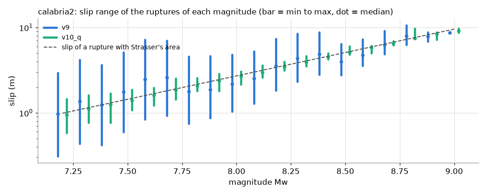
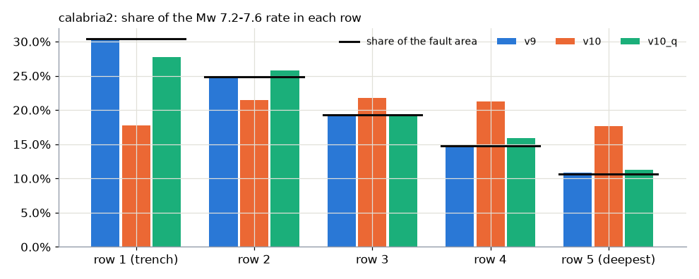
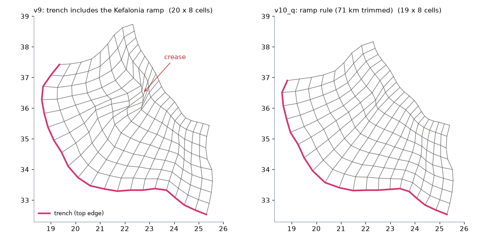

What is new in v10 and v10_q
Three changes on top of v9, made on 2026-10-02 for meshes whose cells are not all about 50 x 50 km (Calabria, the Caribbean) and for a wrong stretch of trench (Hellenic). Two of them are opt-in; with the defaults, v10_q gives v9's results except where the trench ramp rule changes the trench.
At a glance
| change | version | option | default | what it does | changes the rates per magnitude? |
|---|---|---|---|---|---|
| Cell-by-cell ruptures | v10 | --rupture-size rptha|local | rptha (= v9) | each uniform-slip rupture gets the number of cells that matches Strasser's area with the real km of ITS cells, instead of one cell count per magnitude from the zone's mean cell | no |
| q | v10_q | part of --rupture-size local | off | each rupture's conditional-probability weight times q, so places covered by more ruptures (smaller cells) do not get more rate | no |
| Trench ramp rule | v10_q | --trench-ramp on|off | on | a trench end more than 3 km deeper than the trench's normal depth is the edge of the SLAB data, not trench, and is trimmed before the depth-below-trench datum is built | yes, where it trims (the fault gets smaller): hellenic_west2 -1.2% to -5.6% |
The problem: PTHA18 assumes equal cells in two places
Sizing a rupture. rptha computes ONE block of cells per magnitude (for example 2 along the trench x 1 down the slope at Mw 7.2), from the zone's mean cell length and width, and slides that block over the whole mesh. PTHA18's cells are about 50 x 50 km everywhere, so every placement has about the right area. Ours are not: calabria2's cells go from 377 to 4,042 km² (a tight arc, the trench 4 times as long as the deepest edge), caribbean2's from 874 to 6,349 km² (the fault's width changes from 97 to 420 km with the same 4 rows). The same block is then too large in one place and too small in another. Each rupture keeps the right moment (its slip is set from its real area), so the slip is wrong instead: at Mw 7.2 on calabria2, from 0.31 to 2.96 m where Strasser gives 0.99 m.
Sharing the rate. Within one magnitude, PTHA18 gives each rupture a weight proportional to area x convergence. That is fair if every place of the fault is covered by about the same number of ruptures, which a regular mesh gives (apart from the two ends, the reason for PTHA18's edge correction).
The mesh itself cannot be made uniform for those zones (tested at length, see every fix and the V9 pages it links). So the fix is in how the ruptures are built and weighted.
Cell-by-cell ruptures (v10, --rupture-size local)
- At every top-left cell, for each number of rows, the number of columns whose summed real area is closest to Strasser's area; of those, the block with the smallest |log10 area error| + |log10 aspect-ratio error|. These are rptha's own two criteria, measured with the real km of those cells.
- A placement whose best block would need cells beyond the far edge of the mesh is skipped, as rptha skips placements where its block does not fit (tested with one virtual column / row, a copy of the last one).
- A rupture longer than the whole zone takes the full length, with rows chosen by area alone (rptha's
nlength > nstrikebranch). - Every cell must be in at least one rupture of every magnitude (true of rptha's blocks): a cell left out gets the best block that contains it.
- Slip = M0(Mw) / (rigidity x real area), exactly as before.

| zone | largest / smallest cell | ruptures (Mw 7.2-8.7) within x1.5 of Strasser, rptha → local | worst rupture, times off |
|---|---|---|---|
| calabria2 | 10.7 | 57.8% → 99.7% | 4.43 → 1.69 |
| caribbean2 | 7.3 | 51.2% → 98.5% | 5.25 → 2.66 |
| kermadectonga2 (control) | 3.3 | 81.4% → 99.1% | 3.42 → 2.18 |
| kurilsjapan (control) | 1.9 | 88.5% → 100% | 2.04 → 1.44 |
| 31 PTHA18 meshes (official statistics) | 1.0-3.5 | 46-100% → 85-100% | worst better or equal on 30, flores 1.53 → 1.74 |
Even with exact 50 x 50 km cells (Kurils-Japan), rptha's whole number of cells jumps between blocks of half or twice the right area from one magnitude to the next (Mw 7.4: 1 x 1, 0.49-0.92 of Strasser's area; Mw 8.0: 4 x 2, 1.21-1.84), so its slip zigzags around Strasser's; the cell-by-cell rule follows it. The smallest rupture is one cell, which sets the remaining limit (calabria2's trench cells are larger than Mw 7.2's area).
Where in the code: pyptha_v12/events.py _local_blocks(), called by get_all_earthquake_events_of_magnitude_Mw(rupture_size=) and get_all_earthquake_events(rupture_size=); it returns each event's own event_dims (event_dim is None with "local"). Read from the input JSON's events.rupture_size by the engine (python_logic_tree_v12/run_logic_tree.py), step 7b and step 9. No rptha counterpart.
q (v10_q): one rupture per starting cell, without the overlap bias
The cell-by-cell rule makes one rupture start at each cell. Where cells are small, more ruptures overlap the same km², and with PTHA18's weight (about equal for ruptures of equal area) those places would collect more rate for no tectonic reason. With rptha's fixed blocks this was hidden by accident: a block of small cells is a small rupture, with a small weight.
q of a rupture = the average, over its cells, of 1 / (number of ruptures of the same magnitude that contain that cell). The engine multiplies the weight of whichever conditional-probability model the input uses (area x convergence; or 1/slip, or all equal) by q, only with --rupture-size local. Fewer ruptures cover the two ends of the zone, so q also gives them more weight: it does part of the job of PTHA18's edge correction, which is still fitted afterwards (that is why the fitted edge multiplier drops).

| PTHA18's misfit (integrated slip vs convergence, final model) | calabria2 | caribbean2 | kermadectonga2 | kurilsjapan |
|---|---|---|---|---|
| rptha's rule | 7.30e-4 | 5.71e-4 | 3.17e-4 | 6.66e-5 |
| v10 (no q) | 1.03e-3 | 4.77e-4 | 3.71e-4 | 8.55e-5 |
| v10_q | 6.20e-4 | 3.98e-4 | 2.29e-4 | 6.05e-5 |
| fitted edge multiplier, rptha → v10_q | 3.69 → 1.04 | 13.99 → 4.89 | 7.15 → 1.94 | 9.70 → 2.67 |
Where in the code: pyptha_v12/events.py coverage_weights(); applied in python_logic_tree_v12/run_logic_tree.py right before rates.get_event_probabilities_conditional_on_Mw, after all three conditional-probability models. Log line: v10_q: conditional probabilities x q (rupture overlap correction, q from A to B).
Why the earthquakes per magnitude do not change, but the hazard does
The moment balance (LEVEL 2) does read every rupture: it adds up weight x slip x area over the ruptures of each magnitude. But every rupture's slip is set so that slip x area x rigidity is exactly the moment of its magnitude, and the weights of a magnitude add up to 1, so that sum is always M0(Mw) / rigidity, whatever the shapes and the weights. Checked on 12 runs (4 zones x 3 rules): equal to within 1e-14; exceedance tables and rate curves equal to within 3e-13. The rates per magnitude change only with what enters the moment balance (mesh area, convergence, coupling, b, Mw_max, rigidity, GCMT); the ramp rule changes the mesh area, the rupture rules do not.
The tsunami hazard adds up waves, not magnitudes, and every wave depends on the slip and the place of its rupture. In PTHA18 even the heterogeneous-slip and variable-area scenarios take their rate from a uniform-slip parent (compute_rates_all_sources.R, lines 1551 to 1600), so they inherit the new rates and places. First link of that chain, the uplift of the sea floor (Okada, Kajiura filter): with v10_q, uplifts larger than 1 m become 27% less frequent on calabria2 (v9's blocks too small where cells are small, too much slip) and 31% more frequent on caribbean2 (v9's blocks too large where cells are wide, too little slip). Details: V9/html/v10q_rationale.html, section 4d.
Trench ramp rule (v10_q, --trench-ramp on)
Step 1 measures every contour below the nearby trench, so a wrong stretch of trench becomes a wrong datum for everything near it. At hellenic's Kefalonia end the raster's up-dip edge is not trench but the edge of the SLAB2 data: 19.7 km below sea level, climbing to the trench's normal 11.5 km over about 150 km. It was the datum of the northern half of hellenic_west2; there the slab is almost flat, so its 25-35 km contours piled into one line, and the mesh had a crease of sheared, twisted cells.


| zone (raster as the V9 folders use it) | trimmed | effect |
|---|---|---|
| hellenic (hellenic_west2, hellenic2; hellenic_east2 shares the raster and datum) | 71 km | hellenic_west2: area 253,725 → 234,639 km² (-7.5%), rates Mw ≥ 7.2 -1.2%, ≥ 8.0 -2.3%, ≥ 8.8 -5.6%; PTHA18's misfit 3.87e-4 → 3.76e-4 (rptha's rule), 2.11e-4 with v10_q; hellenic_east2's trench 564 → 569 km; hellenic2's 1,557 → 1,487 km |
| caribbean2, antilles2 | 68 km | a deep ramp at the start of the trench: antilles2's trench depth p95 14.5 → 11.2 km |
| kermadectonga2 | 11 km | minimal |
| calabria2, kurilsjapan, makran2, puysegur2, southamerica | 0 | identical |
--trench-ramp on (default) writes TRENCH_RAMP_RISE_KM = 3.0 in step 1; off writes None, v9's trench. Folders generated before this option (calabria2_v10, calabria2_v10_q, caribbean2_v10, caribbean2_v10_q) have no such constant and keep v9's trench even if re-run; regenerating caribbean2 now would trim its 68 km.
Where in the code: lib/slab_contours.py _ramp_trim(), find_trench(ramp_rise_km=, ramp_ref_km=(100, 200), ramp_max_km=100) (default None = v9), below_trench_contours(ramp_rise_km=). Log: ramp rule (...): start trimmed by N km, end by M km; data/step1_contours_info.json: trench_ramp_rise_km, ramp_trim_km; report.html, step 1 card. Tests: pyptha_v12/tests/test_trench_ramp.py.
How to use it
# from V9/ (venv ../../../.venv) python from_scratch_v12/generate.py calabria --zone calabria2 --folder calabria2_v10_q --ptha false --rupture-size local python from_scratch_v12/generate.py hellenic --zone hellenic_west2 --folder hellenic_west2_v10_q --ptha false --discretizer optimal --rupture-size local # then the folder's own steps/step_total.py # the trench ramp rule is on by default; --trench-ramp off gives v9's trench
| where | what to look for |
|---|---|
inputs/input_<zone>_scratch.json | "events": {"rupture_size": "local", ...} (absent = "rptha") |
steps/step1_fetch_slab2.py | TRENCH_RAMP_RISE_KM = 3.0 (or None) |
run_final.log | ramp rule (...), n_events = N (rupture size: local), v10_q: conditional probabilities x q |
README.md of the folder | "Rupture size: local (v10)" and "Trench ramp rule: on (v10_q)" lines |
report.html | step 1 card (ramp rule), the rupture section (rupture size and q), the rupture explorer (each rupture's own block) |
How it was checked
- Tests (172 passed, 15 skipped):
test_rupture_size.py(11: default = rptha; with local every block fits, every cell is covered at every magnitude, no duplicates, exact moment, areas follow Strasser on an uneven mesh, never worse than rptha on a uniform one, the full-length case, the event table; q by hand, equal on rptha's interior, evening out the coverage) andtest_trench_ramp.py(4: a synthetic ramp is trimmed, off = v9, no ramp = nothing trimmed, the datum near the ramp is the real trench's). - 31 PTHA18 meshes (official unit-source statistics): areas within x1.5 of Strasser and no cell left out of every rupture of a magnitude.
- Same inputs, one rule changed: calabria2_v9 / _v10 / _v10_q and caribbean2_v9 / _v10 / _v10_q have identical meshes, convergence and GCMT files (byte for byte); the control zones kermadectonga2 and kurilsjapan are their v9 inputs run with each rule (
V9/html/v10q_rationale/src/run_controls.py; the "classic" run reproduces the v9 folder exactly);runs/python/hellenic_west2_v10q_geometry_classicseparates the ramp rule from the rupture rule. - Moment identity and rates per magnitude on all 12 runs, as above.
Known limitations
- No rupture smaller than one cell (calabria2: worst rupture 1.69 times off Strasser's area).
- The HS generator (step 7b) still assumes equal cells inside a footprint: rptha's SFFM uses ONE cell spacing, the peak cell's length and width, for the whole field. Inside a v10_q Mw 8.0 rupture the cell length varies up to 2.3 times (90th percentile) on hellenic_west2_v9 and 2.0 on calabria2, against 1.17 on Kurils-Japan. Analysed, not implemented: the same spectrum with correlation by real distance on the slab, or on a regular km grid averaged onto the cells. See HS and VAUS.
- Cell shape. v10_q fixes how ruptures are built from the cells, not the cells. Okada's sea-floor deformation uses each cell's real, subdivided geometry, so a deformed but valid cell is fine there; index-space blocks at a sharp corner are still wedge-shaped in km. A mesh-smoothing step 2 was prototyped, not implemented (hellenic_west2_v9: corner p90 50 → 32 deg, twist 0.44 → 0.11, area -0.1%; calabria2: almost no change, a fan cannot be meshed regularly with rows x columns); after the ramp rule hellenic_west2 is already at p90 31 deg, twist 0.07.
- Not PTHA18's procedure with
local: the event list no longer matches PTHA18's event by event, and PTHA18's DART-based calibration of its HS/VAUS families was made with rptha's ruptures. - Berryman's dip is not used (as in PTHA18): the dip comes from SLAB2. Mesh and Berryman dips agree within a few degrees on Kurils, Kermadec, Makran and the Antilles, not on hellenic (7.5-9 deg against 30-42; rows 5-6 of hellenic_west2 are at 3-4 deg in SLAB2 itself, also after the ramp rule).
- Not regenerated yet with v10_q: hellenic_east2 and hellenic2 (their trench changes slightly with the ramp rule).